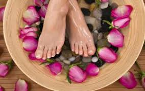

Beauty salon Letňany

O mně
Jmenuji se Jana Horová a pedikúře se věnuji od roku 2005.
Praktikuji mokrou pedikúru i masáže.
Mojí silnou stránkou jsou kuří oka!
Výhody pedikúry
Pravidelná pedikúra přináší mnoho benefitů, včetně:
- Zdravější a krásnější chodidla
- Prevence a léčba kuřích ok a mozolů
- Zlepšení krevního oběhu díky masáži
- Uvolnění napětí a relaxace
- Hygienická péče, která pomáhá předejít infekcím
Jak probíhá pedikúra?
Celý proces pedikúry zahrnuje několik pečlivých kroků:
- 10minutová lázeň v roztoku soli pro změkčení kůže
- Odstranění odumřelé kůže skalpelem
- Péče o nehty – stříhání, pilování a čištění
- Aplikace speciálních krémů a masáž chodidel
- Na závěr možnost lakování nehtů